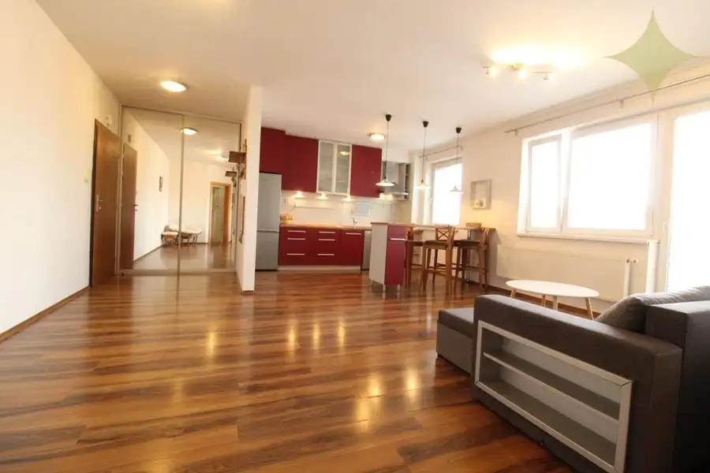
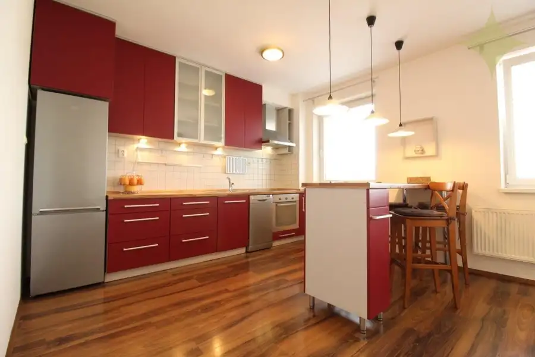
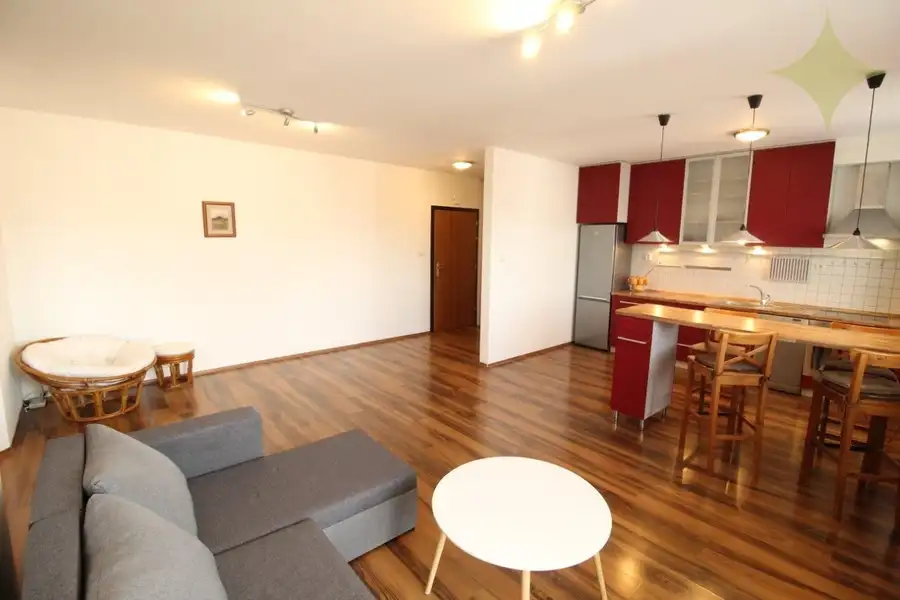
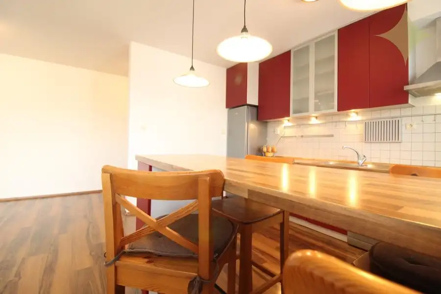
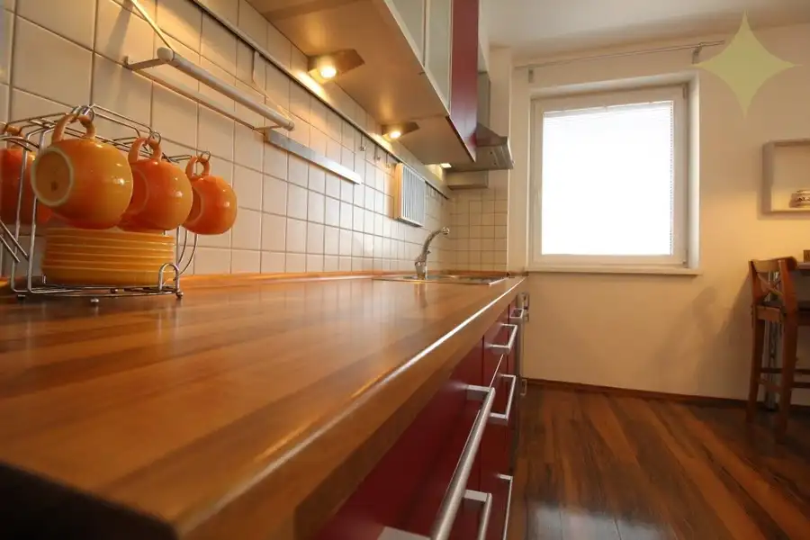
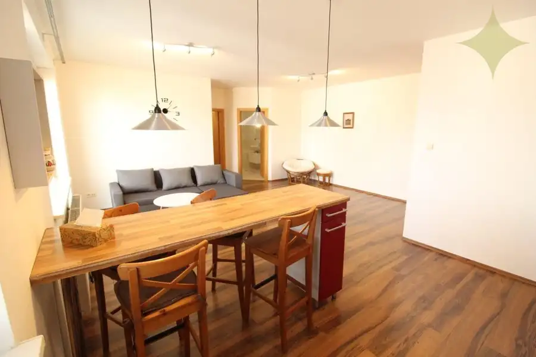
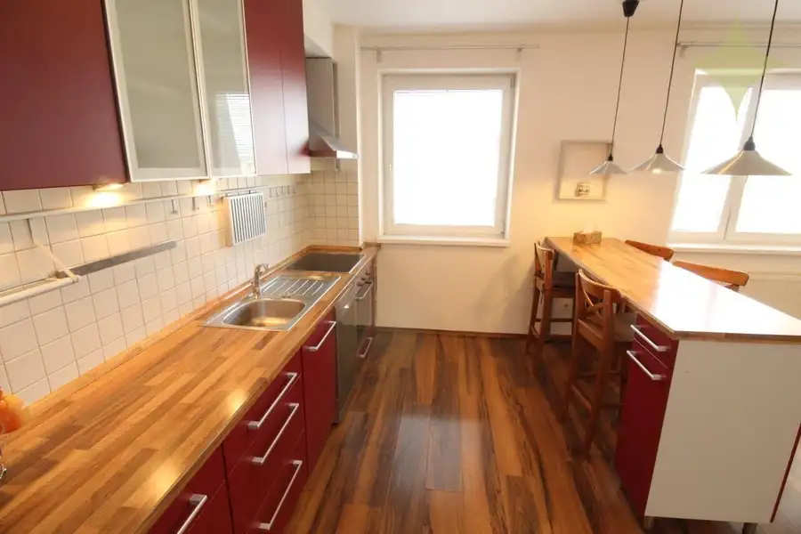

Prenájom: perfektný veľký 2-izbový byt s parkovacím miestom v TOP lokalite - centrum mesta
Liptovský Mikuláš








- Dispozícia2-izbový
- Plocha62.5 m²
- Poschodie5. z 6
- StavPôvodný stav
- VlastníctvoOsobné
- Energetická triedaB
O nehnuteľnosti
PONÚKAME NA PRENÁJOM PERFEKTNÝ ZARIADENÝ DVOJIZBOVÝ BYT S LOGGIOU, PIVNICOU A PARKOVACÍM MIESTOM■ PRIAMO V CENTRE MESTA LIPT. MIKULÁŠ - LEN 100m OD PEŠEJ ZÓNY ! ■ K DISPOZÍCII IHNEĎ ! Podmienkou je nájomník nefajčiar, bez domácich zvierat. ■ MESAČNÝ NÁJOM: 550,-€ + 150,-€ ENERGIE (BEZ PARKOVACIEHO MIESTA) , alebo ■ MESAČNÝ NÁJOM: 580,-€ + 150,-€ ENERGIE (S PARKOVACÍM MIESTOM V UZAVRETEJ ZÓNE PRED BYT. DOMOM)■ BYT o celkovej výmere až 62,47 m2 je na 5. poschodí v modernom bytovom dome s výťahom a podzemnou garážou. ■ K bytu prislúcha LOGGIA, PIVNICA.■ Bytový dom je zateplený s plastovými oknami, nové dorozumievacie zariadenie s čipom, telefónom a ovládaním elektronického vrátnika, elektrické automatické vráta do podzemnej garáže. ■ Vyhradené uzavreté parkovisko pre obyvateľov priamo pred bytovým domom - vstup cez brány s elektrickými zámkami na čip. Bezpečnostné vstupné dvere do bytu. ■ DISPOZÍCIA: Obývacia izba spojená s kuchyňou jedálenským kútom tvoria jeden veľký komfortný priestor. Priestranná spáleň , veľká kúpeľňa s vaňou a samostatné WC. Orientácia bytu na východ. ■ Parkovanie priamo na pozemku pri bytovom dome na uzavretom parkovisku. ■ V okolí najlepšia kompletná občianska vybavenosť - všetko! CENTRUM (námestie) 2 MIN. PEŠO...! Bezproblémoví susedia. ■ IS: Elektrina, ver. vodovod, kanalizácia, vykurovanie ústredné panelovými radiátormi s termostatickými hlavicami z centrálnej kotolne spolu s TÚV, opt. internet. Energetický certifikát "B". ■ Doba nájmu min. 1 rok. Zálohová platba za energie bude prispôsobená reálnej spotrebe podľa vyúčtovania. ■ POŽADUJEME DEPOZIT VO VÝŠKE DVOCH MESAČNÝCH NÁJMOV VRÁTANE ENERGIÍ PRED NÁSTUPOM. ■ V CENE NÁJMU JE AJ ZARIADENIE ! (SPÁLEŇ VIEME DOZARIADIŤ). ■■ OBHLIADKU SI DOHODNITE TU: Štefánia Horská +421 903 138 497, stefania.horska@premiumliving.sk ■■
Parametre
- Cena vrátane energií
- Nie
- Druh
- 2 izbový byt
- Dátum zverejnenia
- 03. 09. 2026
- Energetická náročnosť
- Energeticky úsporný
- Energetický certifikát budovy
- B
- Orientácia
- Východná
- Podlažie
- 5
- Počet nadzemných podlaží
- 6
- Počet vonkajších parkovacích miest
- 1
- Stav nehnuteľnosti
- Pôvodný stav
- Telekomunikácie
- Internet
- Typ
- Prenájom
- Typ konštrukcie
- Tehlová
- Umiestnenie
- Ďalšie nadzemné podlažie
- Vlastníctvo
- Osobné
- Vybavenie
- Garážové státie, Vonkajšie parkovacie miesto, Výťah
- Vykurovanie
- Ústredné
- Zariadenie
- Zariadené kompletne
- Úžitková plocha
- 62.5 m²
Kde to je


Mohlo by Vás zaujímať
 DomNové
236 900 €Rodinný dom v perfektnom stave s veľkým pozemkom blízko centra mesta lipt. Mikuláš.
Liptovský Mikuláš
150 m²
DomNové
236 900 €Rodinný dom v perfektnom stave s veľkým pozemkom blízko centra mesta lipt. Mikuláš.
Liptovský Mikuláš
150 m²
 DomNové
129 000 €Rodinný dom na liptove - neďaleko aquaparku za super cenu !
Ivachnová
148.19 m²
DomNové
129 000 €Rodinný dom na liptove - neďaleko aquaparku za super cenu !
Ivachnová
148.19 m²
 PozemokNové
42 000 €Hľadáte malý stavebný pozemok pre chatku, modulárny, alebo mobilný dom na Liptove ?
Ižipovce
330 m²
PozemokNové
42 000 €Hľadáte malý stavebný pozemok pre chatku, modulárny, alebo mobilný dom na Liptove ?
Ižipovce
330 m²